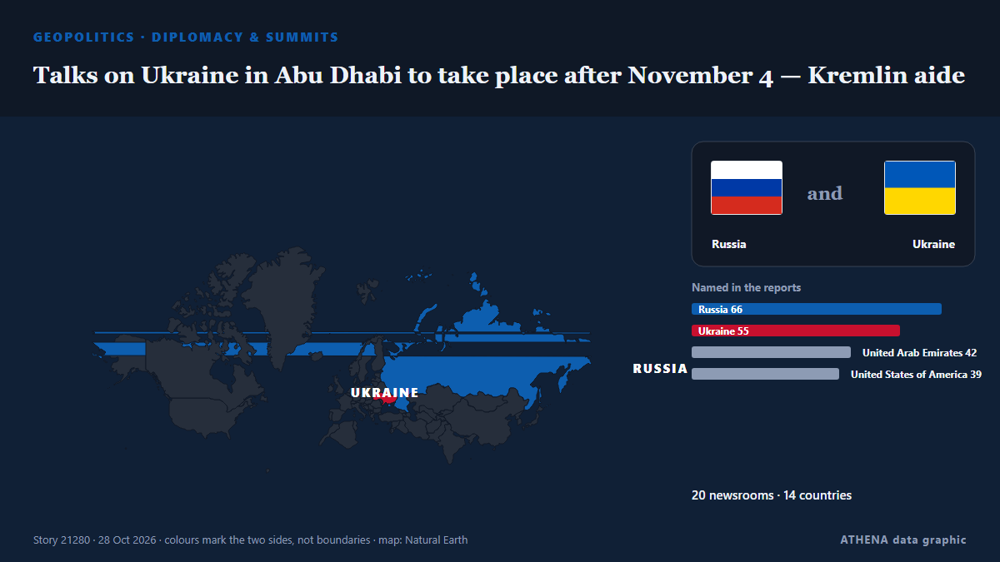

Talks on Ukraine in Abu Dhabi to take place after November 4 — Kremlin aide

The date will be determined soon, Yury Ushakov said. από TASS (English)
Αναφέρθηκε ανεξάρτητα από 20 μέσα σε 14 χώρες από τις 22 Οκτ, πρώτο από το TASS (English)· η κάλυψη εξασθενεί. Το ATHENA εκτιμά τον κίνδυνο μέτριο (3.2/10), κυρίως λόγω της σοβαρότητας της βλάβης που περιγράφεται και της γεωγραφικής και τομεακής εμβέλειάς του. Η βεβαιότητα είναι 93% (υψηλή), καθώς το επιβεβαιώνουν 20 ανεξάρτητα μέσα με μέση αξιοπιστία πηγών 78%. Ποιοι το ανέφεραν: 7 μέσα στη χώρα Ρωσία · Russia, 6 μέσα στη χώρα Αζερμπαϊτζάν · Azerbaijan, 3 μέσα στη χώρα Ουκρανία · Ukraine. Η κάλυψη διήρκεσε από 22 Οκτ έως 28 Οκτ, 154 ώρες.
Γιατί έχει σημασία: Η πλήρους κλίμακας εισβολή της Ρωσίας στην Ουκρανία ξεκίνησε τον Φεβρουάριο του 2022. Η σελίδα παρακολουθεί τις μάχες, τα πλήγματα σε υποδομές και τη διπλωματία γύρω από τον πόλεμο, όπως τα καλύπτουν μέσα από όλο τον κόσμο.
Τι άλλαξε: 5 νέες αναφορές από 3 μέσα στο 24ωρο έως 28 Οκτ.
Πρώτη διατύπωση: Kremlin: Trilateral talks on Ukraine planned in Abu Dhabi in first half of November
Οι τίτλοι των ειδήσεων παρουσιάζονται στα αγγλικά, όπως δημοσιεύτηκαν.
Με μια ματιά
Επιλέγεται, βαθμολογείται και γράφεται από τη δημοσιευμένη μεθοδολογία του ATHENA. Κανένας συντάκτης δεν παρεμβαίνει σε μεμονωμένα γεγονότα. Πώς παράγεται ›
| 22 Oct 12:24 UTC | 3 |
|---|---|
| 22 Oct 18:24 UTC | 1 |
| 23 Oct 00:24 UTC | 0 |
| 23 Oct 06:24 UTC | 7 |
| 23 Oct 12:24 UTC | 8 |
| 23 Oct 18:24 UTC | 1 |
| 24 Oct 00:24 UTC | 0 |
| 24 Oct 06:24 UTC | 2 |
| 24 Oct 12:24 UTC | 0 |
| 24 Oct 18:24 UTC | 0 |
| 25 Oct 00:24 UTC | 0 |
| 25 Oct 06:24 UTC | 0 |
| 25 Oct 12:24 UTC | 1 |
| 25 Oct 18:24 UTC | 0 |
| 26 Oct 00:24 UTC | 0 |
| 26 Oct 06:24 UTC | 0 |
| 26 Oct 12:24 UTC | 0 |
| 26 Oct 18:24 UTC | 0 |
| 27 Oct 00:24 UTC | 0 |
| 27 Oct 06:24 UTC | 1 |
| 27 Oct 12:24 UTC | 0 |
| 27 Oct 18:24 UTC | 0 |
| 28 Oct 00:24 UTC | 0 |
| 28 Oct 06:24 UTC | 0 |
| 28 Oct 12:24 UTC | 3 |
| 28 Oct 18:24 UTC | 2 |
| 22 Oct 19:55 UTC | 0.0 |
|---|---|
| 22 Oct 19:57 UTC | 2.2 |
| 23 Oct 11:29 UTC | 3.9 |
| 28 Oct 22:26 UTC | 3.2 |
Γιατί αυτοί οι αριθμοί
Σημασία
Κίνδυνος
Βεβαιότητα
Η κάλυψη — ποιος το ανέφερε και πότε
ο τίτλος όπως δημοσιεύτηκε · ανοίγει το πρωτότυπο- TASS (English) · Ρωσία · RussiaAbu Dhabi currently considered as venue for Russia-US-Ukraine meeting — Kremlin
- AzerNews · Αζερμπαϊτζάν · AzerbaijanPeskov: US-Russia-Ukraine talks likely in Abu Dhabi
- Khaama Press · Αφγανιστάν · AfghanistanKremlin Says Abu Dhabi Being Considered for Russia-US-Ukraine Talks
- Türkiye Today · Τουρκία · TurkeyRussia considers Abu Dhabi for trilateral talks with US, Ukraine
- APA (English) · Αζερμπαϊτζάν · AzerbaijanKremlin: Trilateral talks on Ukraine planned in Abu Dhabi in first half of November
- Punch · Νιγηρία · NigeriaRussia says Ukraine, US talks ‘planned’ for Abu Dhabi
- Xinhua (English) — page reader · Κίνα · ChinaRussia, U.S., Ukraine to hold talks in UAE in November: Kremlin
- Arab News · Σαουδική Αραβία · Saudi ArabiaRussia says Ukraine, US talks ‘planned’ for Abu Dhabi
- Anadolu Agency (English) · Τουρκία · TurkeyKremlin says trilateral Ukraine peace talks scheduled for ‘1st half of November’ in Abu Dhabi
- TASS (English) · Ρωσία · RussiaAbu Dhabi talks are set to take place in trilateral format — Kremlin
- TASS (English) · Ρωσία · RussiaKremlin briefing addresses EU participation in Ukraine talks, security framework
- Africanews (English) · AFRRussia, Ukraine and the US set for November peace talks
- Kyiv Post · Ουκρανία · UkraineAbu Dhabi Considered for Ukraine-Russia-US Talks in November
- Al Jazeera English · Κατάρ · QatarRussia-Ukraine talks planned for November in UAE: Kremlin
- AzerNews · Αζερμπαϊτζάν · AzerbaijanRussia, US and Ukraine to hold trilateral talks in Abu Dhabi in November
- The Straits Times · Σιγκαπούρη · SingaporeUkrainian, Russian and US negotiators to meet in Abu Dhabi, says Zelensky
- Business Recorder · Πακιστάν · PakistanZelenskiy says Ukrainian, Russian and US negotiators to meet in early November in Abu Dhabi
- Al-Monitor · Ηνωμένες Πολιτείες · United StatesZelenskiy says Ukrainian, Russian and US negotiators to meet in early November in Abu Dhabi
- APA (English) · Αζερμπαϊτζάν · AzerbaijanZelenskyy says Ukrainian, Russian and US negotiators to meet in early November in Abu Dhabi
- Vanguard · Νιγηρία · NigeriaRussia says Ukraine, US talks ‘planned’ for Abu Dhabi
- Ukrainska Pravda (English) · Ουκρανία · UkraineUkraine-US-Russia talks could take place in Abu Dhabi or Switzerland – Sky News
- Kyiv Post · Ουκρανία · UkraineUS-Ukraine-Russia Talks Slated for Abu Dhabi or Switzerland
- The Jerusalem Post · Ισραήλ · IsraelEurope should be included in Ukraine peace discussions, Kremlin aide says
- APA (English) · Αζερμπαϊτζάν · AzerbaijanKremlin: Date for trilateral talks on Ukraine in Abu Dhabi not yet determined
- TASS (English) · Ρωσία · RussiaNo dates set for Ukraine talks in Abu Dhabi; coordination process underway — TASS source
- APA (English) · Αζερμπαϊτζάν · AzerbaijanPeskov: Mutual security guarantees between Russia and Ukraine to be discussed at Abu Dhabi talks
- TASS (English) · Ρωσία · RussiaMutual security guarantees to be discussed in Abu Dhabi — Kremlin
- TASS (English) · Ρωσία · RussiaTalks on Ukraine in Abu Dhabi to take place after November 4 — Kremlin aide
- Meduza (English) · Ρωσία · RussiaKremlin says U.S.-Russia-Ukraine peace talks will take place in Abu Dhabi after November 4, depending on battlefield conditions